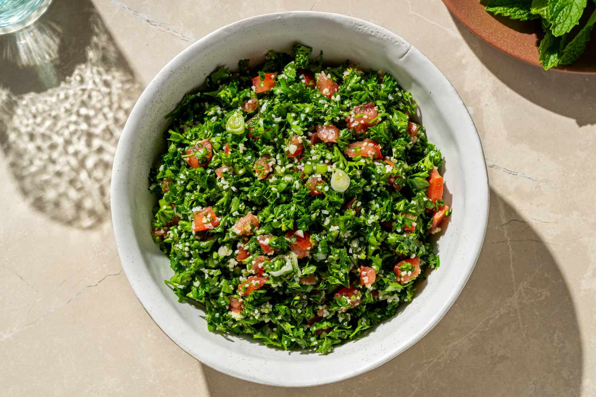

tabbouleh

used this as a template
adjusted to be more like my mom's recipe :3 it's really good so i hope i didn't muck it up
ingredients
- 3 cups finely chopped parsley
- 1 cup diced tomatoes
- ¼ cup fine bulgur
- 1 scallion
- 4 tbsp freshly squeezed lemon juice
- 6 tbsp olive oil
- ½ tsp sea salt
directions
- Combine parsley, scallions, tomatoes and bulgur in a medium bowl.
- Add olive oil, lemon juice, salt, (and other spices if using) mix well, taste and adjust seasoning to your taste.
- Serve immediately or refrigerate if serving later.